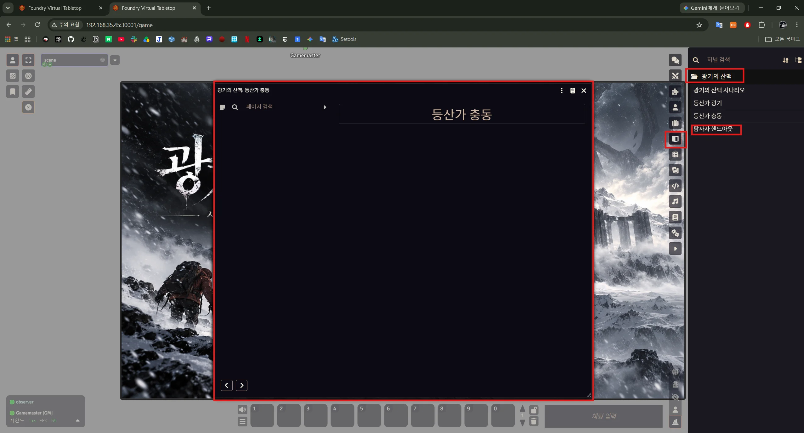
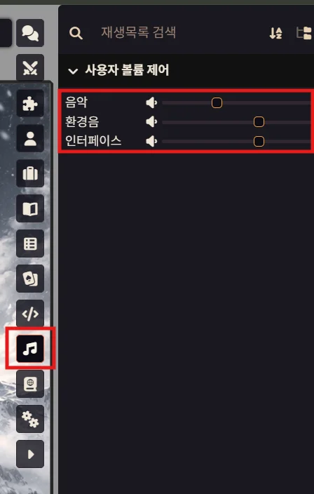

1
사이드바 주요 탭 구성
화면 우측 사이드바 상단에는 세션에 필요한 핵심 기능 탭들이 모여 있습니다. 붉은색 상자 순서대로 다음과 같습니다.
- 💬 채팅 로그: 텍스트 대화, 주사위 굴림 및 판정 결과 확인
- 👤 액터 디렉터리: 내 조사자 시트 확인 및 관리
- 📖 저널 엔트리: 세션 중 공유받은 핸드아웃 모아보기
- 🎵 오디오 재생목록: 배경음악 및 환경음 조절
- ⚙️ 게임 설정: 브라우저 그래픽 최적화 및 편의 환경설정

원활한 CoC 세션 진행을 위한 인터페이스 및 필수 조작법 매뉴얼입니다.
화면 우측 사이드바 상단에는 세션에 필요한 핵심 기능 탭들이 모여 있습니다. 붉은색 상자 순서대로 다음과 같습니다.
세션 도중 버벅임이나 렉이 발생한다면 [환경 설정] 탭에서 렌더링 성능을 조절하여 쾌적하게 플레이할 수 있습니다.

채팅창을 통해 다양한 다이스 굴림을 진행합니다.

전투 발생 시 다음 순서에 맞춰 공격 판정을 진행해야 정확하게 처리됩니다.

세션 중 획득한 단서나 지나간 텍스트 자료는 우측 [저널 엔트리(책 아이콘)] 탭에 모두 보관됩니다.

우측의 [오디오(음표 아이콘)] 탭을 클릭하면 개인별 볼륨 제어 슬라이더가 나타납니다.
슬라이더를 드래그하여 본인에게 알맞은 볼륨으로 자유롭게 설정하시면 됩니다.
